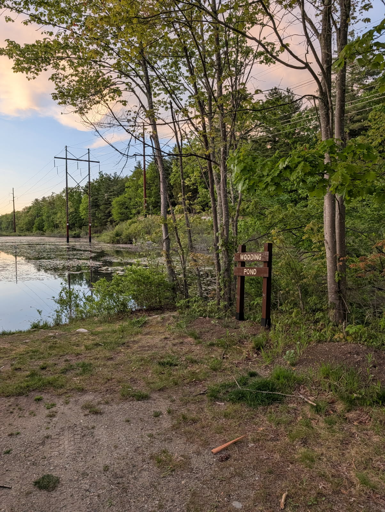

I am years old and live in Redondo Beach, California.
YouTube · TikTok (@barstoolsyria) · Twitter (@barstoolsyria) · Instagram (@natewooding)
I enjoy hiking and backpacking. In 2018 I thru-hiked the Long Trail in Vermont, which runs 273 miles from the Massachusetts border to the Canadian border and is the oldest long-distance hiking trail in the United States. I track all of my hikes on CalTopo and log every summit on Peakbagger.
In 2022 I posted a TikTok that resulted in some coverage from the Welsh press. Wales Online: TikTok backlash as American says Wales is not a country.
There is a pond near my childhood home in New Hampshire that had no name. I changed that by editing Google Maps and OpenStreetMaps to list it as Wooding Pond.
A few years later, a sitting NH state house member referenced it by name on Twitter. Rep. Kristin Noble, December 2024.
A few years after that, my father made a sign.
